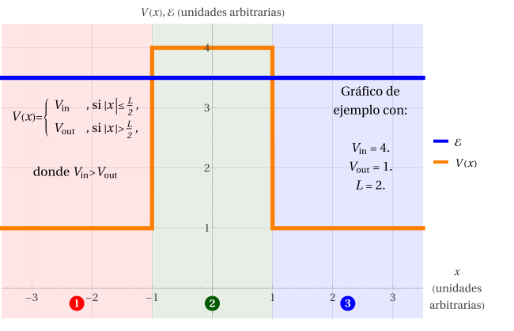

Caso (b): \(V_\text{in}>\mathcal{E}>V_\text{out}\)

Ocurrirá que \(k_\text{out}\) es real y positivo, mientras que \(k_\text{in}=i\gamma_\text{in}\) será un imaginario puro. Es decir, las eigenfunciones serán oscilatorias fuera de la barrera y exponenciales dentro de ella. Al igual que en los otros casos analizados, supondremos que (i) la onda viene desde la izquierda para usar \(A_1\) como coeficiente de referencia y (ii) no hay nada con qué reflejarse en la Región 3, de modo que \(B_3=0\).
No obstante, a diferencia del pozo finito, el comportamiento exponencial en la Región 2 no permite anular alguna de las incógnitas. Esto se debe a que, al estar la Región 2 espacialmente acotada, las exponenciales no alcanzan a diverger allí. De este modo, este caso no es matemáticamente tan distinto al caso (a), salvo por \(0\lt\eta\le1\), de modo que los estudiaremos juntos.